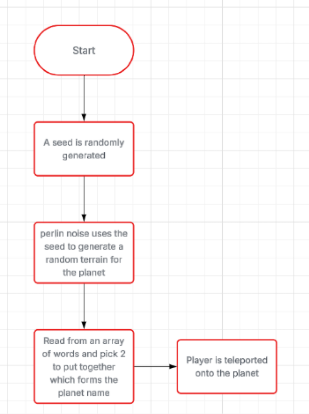
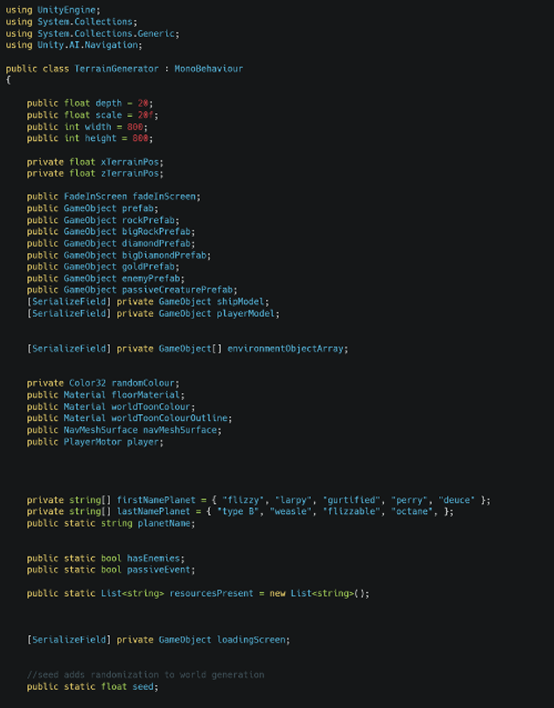
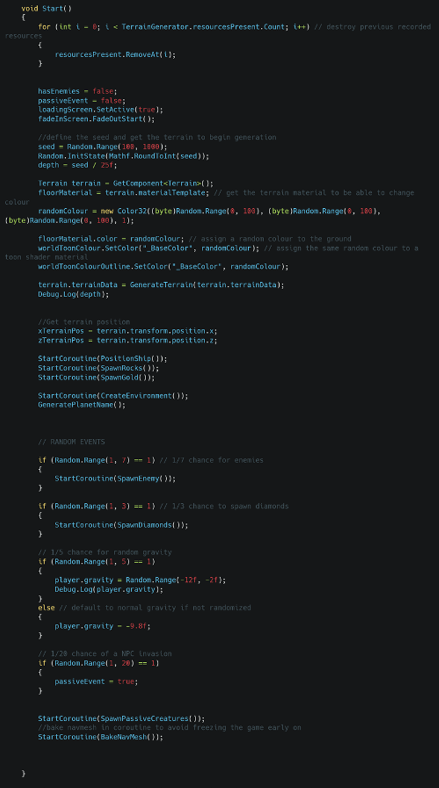
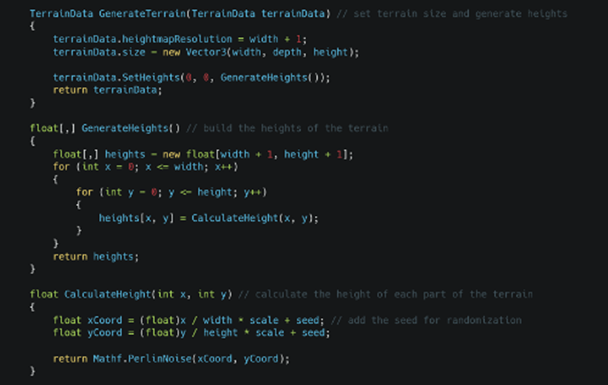
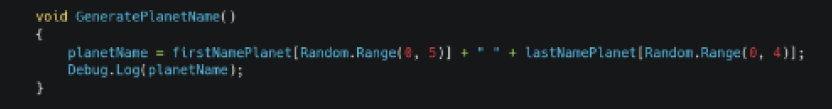
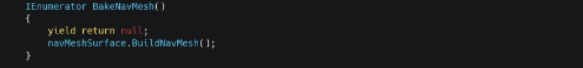

Functional requirement
“There should be a system that makes each explored Planet feel unique. Each Planet should have randomly generated features such as: Planet structure, colouring, resources and environment.
Testable criteria:
structure varies per planet
Environment such as rock are randomly placed
resources scattered on the Planet are randomly distributed
The colours of the Planet should be unique”


World gen variables

Start method begins generating seed for world, defines a random colour for the terrain, then spawns some basic resources along with some random events that have a chance to spawn other resources/NPCs. It also bakes the NavMesh for NPCs.

These methods edit the Unity terrain with different heights that are influenced by the seed.

Makes a planet name for the terminal.

Builds navmesh in a coroutine to allow other processes to run.